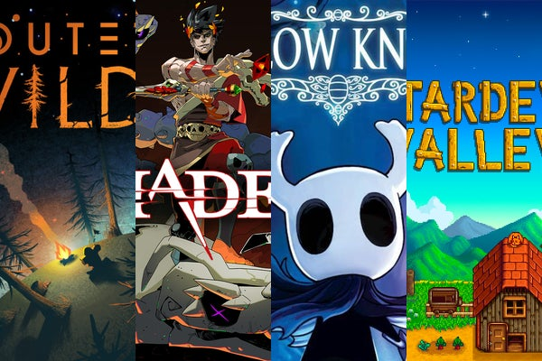

Independent games, called “indie” for short, have exploded onto the market over the last decade. While indie games have always been possible to create, and indeed have always existed inside the gaming sphere through websites like Newgrounds, their creation has never been as accessible and as lucrative as it is today. Free or affordable engines for game creation such as Unreal and Godot allow hobbyists to enter game creation with very little investment. Furthermore, all major digital platforms (Steam, Epic, Microsoft, Playstation, Nintendo eShop) are now very open toward allowing indie games on their storefront, making self-publishing far less of a headache.

Sure, indie games are easier to make and publish now, but what is making them so popular? Their lowered development cost often means lowered prices for the consumer, making them cheaper than AAA alternatives. They also tend to be passion projects for solo developers or small teams, meaning that they have a very clear story to tell or feeling to capture. This draws in players who are tired of rehashing the same tired tropes and gameplay loops so often featured by larger studios. AAA games are expensive to make and thus must reach as large of a target audience as possible in order to make a profit, which sadly means they are often generic. While any single indie game is unlikely to reach nearly as many players, the ones it does reach often leave glowing reviews based on the more tailored experience they find within. Take a look at the data below to see just how much indie games are growing in our current market.
I recently had the pleasure of playing a neat little indie game by the name of Fear and Hunger. The game was made by a solo developer on the easily accessible RPG Maker MV engine, making it the very definition of “indie”. Set in the dank dungeon of a ruined fort, filled with mystery and intrigue, the game cultivates a very particular atmosphere. Enemies and traps lie around nearly every corner, while the music and sound effects add wonderfully to the feeling of dread as you explore. The game is also brutally difficult and punishing, meaning you will need to think carefully and weigh whether a room is worth the risk of exploring. This is balanced well against the mystique of the game's writing, which leaves you wanting to grasp at every snippet of lore and leave no stone unturned. Thus the game leaves you walking the edge between the fear of defeat and the temptation of finding answers.
The game takes about 25 hours to complete, meaning it does not overstay its welcome. The combat is clearly reminiscent of old school JRPGs—most likely a limitation of using the RPG Maker engine. However, the game adds a fresh touch to the age-old, turn-based combat by allowing you to target specific body parts on an enemy. These parts can be severed or damaged and can dramatically impact the flow of combat encounters. Severing an arm can cause the enemy to lose an attack, while destroying the enemy's head can lead to an instant kill. In one particularly gruesome example, destroying an enemy's genitals leads to it becoming enraged and making the fight much more difficult. The same rules of combat apply to your party of character's as well, and losing an arm early can spell disaster for your playthrough.
Overall the game is a refreshing twist on a classic system with a very strong reliance on atmosphere and writing. I would highly recommend it to anyone looking for a unique experience of grim eldritch horror and suspense.